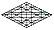

wjyezj Hezekiah חזקיחו
Elation can raise up hurdles
j
of zeal
z:
either the low ones, pious
q
ambition
y;
or the high ones, lusting
j
for affirmation
w.
Recognition
j,
if it becomes a goal, will delay
z
ordained
q
blessings
 y;
for enlightenment
h
requires surrender
w—blind
faith. Introspection on the ladder
j
of perfection
z
will be hampered
q
by the pursuit
y
of individual
j
salvation
w;
for the chariot
j
swings low
z
on behalf of the Kingdom
q:
that is, if you are found to be humble and patient
y,
you are sure to be gathered up
h
in the Savior’s arms
w.
y;
for enlightenment
h
requires surrender
w—blind
faith. Introspection on the ladder
j
of perfection
z
will be hampered
q
by the pursuit
y
of individual
j
salvation
w;
for the chariot
j
swings low
z
on behalf of the Kingdom
q:
that is, if you are found to be humble and patient
y,
you are sure to be gathered up
h
in the Savior’s arms
w.
Gematria
139
flq:
The holy
q
Shepherd
l
is your ally
f,
Numerology
58
jn
>
13
gy
>
4
d:
not your foe
n.
He is your companion; and, by agreement
j,
it is he who must usher
y
you along the path
g
of destiny
d.
Targum:
Jacob’s Ladder
j
has been lowered
z
into the second heaven, the human mind
q.
Your soul has access
y
to its rungs
h
through surrender and sacrifice
w.
| Stepping | Stones | |||
|
site |
Font | bookmenu |